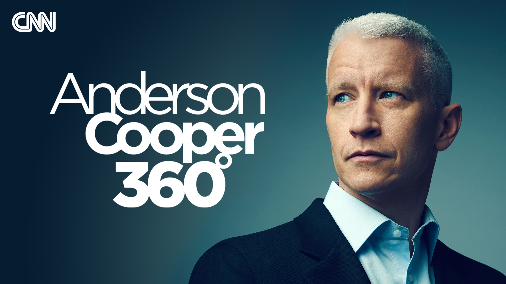

【CNN News 20250725 AC360 爱泼斯坦案相关人士与司法部副部长会面｜总统与美联储主席公开冲突｜胡克·霍根的传奇生涯】
Summary: Breaking news on Epstein associates meeting with Deputy AG, presidential feud with Fed Chair, and Hulk Hogan's legacy.
摘要： 突发新闻：爱泼斯坦案相关人士与司法部副部长会面，总统与美联储主席公开冲突，以及胡克·霍根的传奇生涯。

⏱️ Estimated Reading Time: 88 min.
📚 四级生词 📚 六级生词 📚 雅思生词 📚 托福生词 📚 专八生词 📚 SAT生词 📚 考研生词 📚 GRE生词 📚 高考生词 📚 其它生词
Tonight on 360 breaking news on the extraordinary meeting between Epstein, Cokin, Spearter, and Golane Maxwell and the Deputy Attorney General.
今晚360度节目报道爱泼斯坦、科金、斯帕特和吉兰·麦克斯韦与司法部副部长的异常会面。
We just learned it's not over and will now continue tomorrow.
我们刚获悉会面尚未结束，明日将继续进行。
Plus, the president's feud with the Fed chair Jerome Powell burst into the open at the bank's headquarters with a twist the president might not have anticipated.
此外，总统与美联储主席杰罗姆·鲍威尔的争执在银行总部公开化，出现了总统可能未预料到的转折。
And remembering Hulk Hogan, the reign of Hulkomania and an entertainment industry that might never have existed without it.
并缅怀胡克·霍根及其“霍根狂热”时代——没有他，娱乐产业或许不会存在。
Good evening, John Berman here in Ferrandes and the breaking news, a top justice department official met for hours and hours today with a woman convicted of conspiring with Jeffrey Epstein to sexually abuse minors.
晚上好，我是约翰·伯曼，现位于费朗德斯。突发新闻：一名司法部高官今日与一名因共谋杰弗里·爱泼斯坦性侵未成年人而定罪的女性进行了长达数小时的会面。
And we just learned moments ago he's not done yet.
我们刚刚获悉，会面尚未结束。
Deputy Attorney General Todd Blanche just tweeted, today I met with the Lane Maxwell and I will continue my interview of her tomorrow.
司法部副部长托德·布兰奇刚发推称：“今日我会见了吉兰·麦克斯韦，明日将继续问询。”
The Department of Justice will share additional information about what we learned at the appropriate time.
司法部将在适当时机公布更多信息。
Now there's obvious interest in what she said, but just as many questions about what was asked and maybe what was offered.
外界自然关注她的供词，但同样好奇提问内容及可能的交换条件。
That's a lot of talking.
此次谈话信息量巨大。
Blanche the number two at the Justice Department and former defense attorney for President Trump met with federal prisoner Golane Maxwell at the U.S. Attorney's Office in Tallahassee.
司法部二把手、前特朗普总统辩护律师布兰奇，在塔拉哈西联邦检察官办公室会见了囚犯吉兰·麦克斯韦。
Maxwell is currently serving a 20 year sentence at the nearby federal correctional institution this video of her returning to prison.
麦克斯韦目前正在附近联邦惩教所服20年刑期，这是她会后返回监狱的画面。
This is video of her returning to prison after the meeting.
此为会面后她返回监狱的录像。
Blanche was sent at least in part to try to calm some of the furor among the president's supporters about how the administration has handled the Epstein controversy.
布兰奇此行部分目的是平息总统支持者对政府处理爱泼斯坦争议的不满。
Earlier this week, Blanche posted on social media for the first time the Department of Justice is reaching out to Golane Maxwell to ask, what do you know?
本周早些时候，布兰奇首次在社媒发文称司法部正接触吉兰·麦克斯韦以追问“你知道什么？”
Point of fact, it's not exactly the first time that the federal prosecutors have had contact with Golane Maxwell more on that at a moment.
事实上，联邦检察官并非首次接触麦克斯韦，稍后详述。
Maxwell's lawyer briefly spoke to reporters afterwards.
麦克斯韦的律师会后向记者简短表态。
productive day today with the Deputy Attorney General, top Blanche and Golane Maxwell.
“今日与司法部副部长布兰奇及麦克斯韦的会面富有成效。”
First, we want to thank the Deputy Attorney General for being so professional with all of us and for meeting with us.
“首先感谢副部长的专业态度及会面机会。”
He took a full day and asked a lot of questions and Ms. Maxwell answered every single question.
“他花了一整天时间提问，麦克斯韦女士回答了所有问题。”
She never stopped. She never invoked a privilege. She never declined to answer.
“她全程配合，未行使特权，未拒绝回答。”
She answered all the questions truthfully, honestly, and sort of that's the probability.
“她如实回答了所有问题，这基本是事实。”
She answered all the questions truthfully, he said, but what questions and about whom?
律师称她“如实作答”，但问题内容及涉及对象仍存疑。
Concern over Maxwell's honesty had been raised before by the Justice Department when they charged, tried and convicted her for sex trafficking of a minor and other offenses.
司法部此前指控麦克斯韦未成年人性交易时，已对其诚信提出质疑。
In other words, the first time they asked Maxwell what she knew.
即当局首次追问麦克斯韦所知内情时。
In recommending, she spent 20 years in prison, DOJ wrote a scathing sensing memo, which included, quote, that offended has lied repeatedly about her crimes exhibited in an utter failure to accept responsibility and demonstrated repeated disrespect for the law and the court.
建议判处20年时，司法部在备忘录中严厉指出：“被告屡次就罪行撒谎，完全拒绝承担责任，并多次藐视法律与法庭。”
Later on, federal prosecutors wrote simply put the defendant lies when it suits her.
检方后来总结称：“被告为利而谎。”
Another way to sum up today's meeting, serial liar meets with President Trump's former defense attorney.
今日会面亦可概括为：“连环骗徒会见特朗普前辩护律师。”
And it's not just the federal prosecutors who secured her conviction that questioned her credibility.
不仅定罪的联邦检察官质疑其可信度。
Speaker of the House, Mike Johnson, also seems to have concerns.
众议院议长迈克·约翰逊亦表忧虑。
Could she be counted on to tell the truth?
“她能如实供述吗？”
Is she a credible witness?
“其证词可信吗？”
I mean, this is a person who's been sentenced to many, many years in prison for terrible unspeakable conspiratorial acts and acts against innocent young people.
“此人因针对无辜青年的骇人共谋罪行被判重刑。”
I mean, can we trust what she's going to say?
“其供述值得采信吗？”
That's the same speaker, Mike Johnson, who sent the House home early for its summer recess rather than hold a floor vote on releasing any Epstein information.
正是这位约翰逊议长提前结束国会夏季会期，未就公开爱泼斯坦文件进行表决。
Despite that, some of his conference continues to buy him and press forward with both asking Glenn Maxwell their own questions and voting to issue a subpoena to the Justice Department for the Epstein files.
尽管如此，部分共和党人仍推动直接质询麦克斯韦，并投票要求司法部提交爱泼斯坦文件。
Obviously, 11th is the date when we hope to depose Maxwell in that prison facility in Tallahassee.
“我们计划11日在塔拉哈西监狱取证麦克斯韦。”
The others that happened yesterday, we're going to move quickly on that.
“昨日进展顺利，我们将加速推进。”
So move quickly on that in reference to the DOJ subpoena.
“针对司法部传票也将快速行动。”
Meanwhile, video has surfaced online of Jeffrey Epstein being deposed back in 2020.
同时，2020年爱泼斯坦取证视频流出。
From a transcript of the deposition, we know that Epstein was asked in number of questions on a myriad of topics for which he pled the 5th many times, including this one about then citizen Donald Trump.
笔录显示，爱泼斯坦就多个话题（包括时任平民特朗普）频繁援引第五修正案拒答。
Have you ever had a personal relationship with Donald Trump?
“你与特朗普有过私人关系吗？”
What do you mean a personal relationship?
“何谓私人关系？”
Have you socialized with him?
“你们有社交往来吗？”
Yes, sir.
“有的。”
Yes, sir. Have you ever socialized with Donald Trump in the presence of females under the age of 18?
“是否曾与特朗普和18岁以下女性共同社交？”
Though I'd like to answer that question, at least today, I'm going to have to assert my 5th, 6th, 14th Amendment right in search.
“虽愿作答，但今日我须行使第五、第六及第十四修正案权利。”
Now to be clear, President Trump has not been accused of any wrongdoing related to his relationship with Epstein.
需明确，特朗普总统未因与爱泼斯坦的关系被指控不当行为。
As far as the president's schedule today, he had an outing to the Federal Reserve in theory to oversee the ongoing renovations of its headquarters with embattled Fed Chair Jerome Powell.
总统今日理论上为视察美联储总部翻修而会见鲍威尔。
In practice, it might be seen as the next stop on the anything but Epstein tour.
实际或为转移爱泼斯坦事件焦点的行程。
And the president definitely created spectacle to talk about maybe inadvertently when he learned in real time, in a real time fact check about the cost of the project.
总统确制造了话题——他当场质疑工程成本遭实时反驳。
It looks like it's about 3.1 billion, one up a little bit or a lot.
“预算似为31亿，略有/大幅超支？”
So the 2.7 is now 3.1.
“27亿现增至31亿？”
Yeah, it just came out.
“刚获悉。”
I haven't heard that from anybody.
“无人告知我。”
I know that about 3.1 as well.
“我也刚知31亿。”
3.1 3.2.
“31或32亿。”
This came from us?
“我方数据？”
Yes.
“是的。”
I don't know who does.
“不知谁核算。”
Are you including the Martin renovation?
“含马丁楼翻修？”
You just added.
“你刚纳入。”
That's higher capital.
“属更高资本项。”
You just added in a third building.
“你刚加入第三栋楼。”
That's what that is.
“即为此因。”
That's a third building.
“此为新增楼宇。”
It's a building that's being built.
“系在建项目。”
No, it's been.
“不，已建成。”
He was built five years ago.
“五年前竣工。”
We finished Martin five years ago.
“马丁楼五年前完工。”
It's part of the overall.
“属整体规划。”
Later on, the president was asked as a real estate developer what he would do to a project manager who was over budget.
随后总统被问及，作为地产商将如何处置超预算的项目经理。
His answer was I fire him.
答：“开除。”
For more and all this, seen in his chief White House correspondent, An acre of the source, Kaitlyn Collins is with us now.
详情请见白宫首席记者凯特琳·柯林斯的报道。
Kaitlyn great to see it.
“凯特琳，欢迎。”
Is it clear exactly what the White House hopes the Maxwell Blanche meeting will lead to as it heads into this rather remarkable second day?
“白宫对麦克斯韦与布兰奇次日会面的预期是否明确？”
It's not clear.
“尚不明确。”
And it's not clear what they are ultimately going to produce from this meeting.
“会面最终成果亦未可知。”
I mean, you saw that statement that was brief from the deputy attorney general saying that there will be a second day of meetings and saying that the Department of Justice will determine what appropriate information from these meetings, what they learned to make public.
“副部长的简短声明仅称将进行次日会面，并称司法部将决定公开哪些信息。”
Of course, that is where he works.
“这符合其职权。”
And so that will be a decision that is up to the deputy attorney general who's been in these meetings all day today.
“决定权在参与全天会面的副部长手中。”
And the attorney general, Pam Bondi herself.
“及司法部长帕姆·邦迪本人。”
And so it's not really clear, John, what that's going to look like, or even what they're trying to get out of this and what they can learn from Golane Maxwell that would really change the dynamic here.
“故其具体目标及可能改变局势的收获仍不明朗。”
I was speaking with one Republican Senator last night and asked, you know, what would be a better idea to speak with the victims here if you were trying to learn more about what Jeffrey Epstein was up to and what he was doing.
“有共和党参议员质疑：‘若想了解爱泼斯坦行径，询问受害者是否比询问定罪犯人更有效？’”
Rather than the woman who is convicted of sex trafficking and, of course, sitting in that correctional facility in Florida.
“而非询问佛罗里达监狱中的性交易罪犯。”
It is clear, John, what she could get out of this.
“麦克斯韦的动机很明确。”
Part in a reduction in her sentence.
“可能是减刑。”
Those are things that it still remains to be seen.
“但尚未证实。”
If they're actually even on the table here, it's not been made clear to us yet from the White House.
“白宫未透露此类条件是否存在。”
And the president has kind of distanced himself from this meeting saying that it's up to the Department of Justice here.
“总统则表态此事由司法部全权处理。”
But that really is going to be the question, John, of whether or not this is something that continues to keep this in the headlines, which the White House very much does not want, and yet has been unable to kind of change the narrative.
“关键在于会否持续引发头条——白宫极力避免却无法扭转的叙事。”
And whether or not there is a result here that only inflames and anger is the mega-base more than they've already been by the DOJ's handling of this whole situation.
“以及结果会否进一步激怒已被司法部处理方式惹恼的MAGA阵营。”
So there are a lot of unanswered questions by this, but I've been talking to people who are allies of the president or who work in the administration who have said it is not clear to them.
“诸多疑问待解，但总统盟友及政府官员均表示不明就里。”
What exactly the White House is trying to get out of meeting with Golane Maxwell?
“白宫究竟想从麦克斯韦处获取什么？”
Yeah, again, as I said, it'll be just as interesting if we ever learn what she said as to what Todd Blanche actually asked her.
“正如所言，布兰奇的提问内容与其供词同样值得关注。”
Kayla Collins, great to see you.
“感谢凯特琳。”
We'll see you at the top of the hour for the source.
“稍后《新闻溯源》再见。”
Another bit of breaking news.
“另一则突发新闻。”
It has to do with that alleged 2003 birthday book, purportedly assembled for Jeffrey Epstein in containing messages from some of his friends.
“涉及据称为爱泼斯坦2003年生日册的争议物品，内含其友人留言。”
The Wall Street Journal reported last week that then Citizen Donald Trump contributed a body drawing in message.
《华尔街日报》上周报道时任平民特朗普曾提交裸体素描及留言。
The president denied it, said it's a fake and promptly moved to sue the Wall Street Journal.
总统否认并起诉该报，称系伪造。
Tonight, the newspaper is reporting that the book contained well wishes from other famous people, including former president Bill Clinton.
该报今晚称册子还含比尔·克林顿等名人的祝福。
The former president's office declined to comment on the birthday message, but pointed to the journal to a previous statement, saying that Mr. Clinton cut ties with Epstein more than a decade before Epstein was arrested in 2019 and knew nothing of his crimes.
克林顿办公室援引既往声明称，其早在爱泼斯坦2019年被捕前十余年已断绝往来，且对其罪行不知情。
With this now, CNN anchor, chief legal analyst Laura Coates, former chief judge for the US Middle District Court of Pennsylvania, John E. Jones, and former FBI Deputy Director Andrew McCabe.
“此刻CNN首席法律分析师劳拉·科茨、宾州中区法院前首席法官约翰·琼斯及FBI前副局长安德鲁·麦凯布加入讨论。”
And, Laura, let me just start with you.
“劳拉，请先谈谈。”
The fact that there's going to be a second day of discussions between the deputy attorney general and convicted felon, Glenn Maxwell.
“司法部副部长与定罪犯人麦克斯韦将进行次日会谈。”
What does that tell you?
“你作何解读？”
And again, where are you on one interest?
“你更关注哪一点？”
You more.
“请详述。”
What Maxwell is saying, or maybe what Todd Blanche is asking?
“麦克斯韦的供词，抑或布兰奇的提问内容？”
What does it tell me that the deputy attorney general has enough free time to need with an incarcerated individual in Florida, as opposed to any other matter?
“司法部二把手竟有空专程赴佛罗里达监狱会谈，而非处理其他事务，此事本身已说明问题。”
It tells me there's an extraordinary political pressure that is mounting to essentially force this to happen.
“反映迫使其成行的巨大政治压力。”
I have real concerns, of course, as anyone would, knowing that she has already been, they did not ultimately pursue this, but Glenn Maxwell, perjury was on the table at one point before the sex trafficking charges.
我当然有真实的担忧，正如任何人都会有的那样，知道她已经被指控，尽管他们最终没有追究这一点，但在性交易指控之前，格伦·麦克斯韦的伪证罪曾被考虑过。
The government, one of the offices of the US attorneys, had legitimate concerns about her ability to be truthful.
政府，即美国检察官办公室之一，对她的诚实能力有合理的担忧。
Not about matters, about nuances, was it this date or that date, but about the overall substance of the charges against Jeffrey Epstein, whether she had ever seen him in this behavior, whether she knew anything about it going right to the heart of the matter.
不是关于细节问题，比如是这个日期还是那个日期，而是关于对杰弗里·爱泼斯坦指控的实质内容，她是否曾见过他有这种行为，是否知道任何与此相关的核心问题。
And so him having this opportunity to meet with her and saying they've never spoken to her before, the audience should know it is not uncommon that when somebody is a defendant and they have counsel, and they do not have free conversations with the prosecutor who is actually prosecuting them.
因此，他有机会与她见面并声称他们之前从未与她交谈过，观众应该知道，当某人是被告且有律师时，他们不会与实际上起诉他们的检察官自由交谈，这并不罕见。
They are reserved.
他们是有所保留的。
They want to know if there's a plea offer on the table.
他们想知道是否有认罪协议摆在桌面上。
If there is not one, they have little to no incentive to actually be forthcoming.
如果没有，他们几乎没有动力真正坦诚相待。
Now, I wonder what might be on the table for her to do that.
现在，我想知道她这样做可能会得到什么。
Would it be a commutation or a pardon recommended?
会是减刑还是建议赦免？
Could it be that she is not hopeful that the Supreme Court will take her matter where she's already said, look, I should never have been prosecuted because that Florida prosecuting sweetheart deal that went to Epstein said it wouldn't actually prosecute a co-conspirator.
是否可能是她对最高法院受理她的案件不抱希望，她已经说过，看，我本不应该被起诉，因为佛罗里达州给爱泼斯坦的那份甜心协议说它实际上不会起诉共谋者。
Read, Glenn Maxwell.
读一下，格伦·麦克斯韦。
So Andrew, you know, how unusual is a meeting like this in the first place?
所以安德鲁，你知道，这样的会面首先有多么不寻常吗？
And how confident are you that someone in the room is recording the interview?
你有多确信房间里有人在记录这次访谈？
Either by video or taking contemporaneous notes, will we actually learn exactly what was asked?
无论是通过视频还是实时记录，我们真的能确切知道问了什么吗？
Those are great questions, John.
这些都是很好的问题，约翰。
So the first question, how common is this?
所以第一个问题，这有多常见？
Never happens.
从未发生过。
Never, ever, ever.
从来没有，从来没有。
In my 21 years in the FBI, never, I'm not familiar with a single instance in which the deputy attorney general traveled to a federal prison to participate in the interview of a convict.
在我 FBI 工作的21年里，从未发生过，我不熟悉任何一例副司法部长前往联邦监狱参与访谈一名罪犯的情况。
It just does, it's not the deputy attorney general's role, right?
这根本不是副司法部长的职责，对吧？
Typically, this does happen in some high profile cases.
通常，这确实发生在一些高调的案件中。
Somebody gets convicted and then they decide they want to cooperate and to pursue what we refer to as a rule 35 sentence reduction.
某人被定罪后，他们决定要合作并寻求我们所说的规则35减刑。
It's a possibility if you can contribute substantial assistance after the fact of your conviction.
如果你能在定罪后提供实质性协助，这是一种可能性。
But it's something that the line attorney who handled your case, who took you to trial, who convicted you of those crimes, that attorney is the person who is most best position to evaluate the truth and veracity of what you've now decided to reveal to the government.
但这是由处理你案件的检察官来评估的，他带你上庭，给你定罪，这位检察官是最有能力评估你现在决定向政府透露的内容的真实性和可信度的人。
Unfortunately, in this case, that attorney got fired last week, Maureen Comey.
不幸的是，在这个案件中，那位检察官上周被解雇了，莫琳·科米。
So none of the details around this interview are common or normal in any stretch.
因此，这次访谈的任何细节在任何意义上都不常见或正常。
I think it's Lawyers Absolutely, right?
我认为这绝对是律师的问题，对吧？
The question is, what's the motivation here for the Department of Justice?
问题是，司法部在这里的动机是什么？
Glein Maxwell, clearly her motivation is to get out from under a 20-year sentence in one way or another.
格伦·麦克斯韦，显然她的动机是以某种方式摆脱20年的刑期。
And so I would expect that her lawyers who are very capable are pursuing any sort of relief from that, whether it's rule 35 or a partner or anything else.
因此，我预计她非常有能力的律师正在寻求任何形式的救济，无论是规则35还是其他任何方式。
But it's not clear what the department gets out of this.
但不清楚司法部从中能得到什么。
Presumably, she's a source that's never talked to them before.
据推测，她是一个从未与他们交谈过的消息来源。
Never consistently is thought to have lied and not revealed what she knows.
人们一直认为她在撒谎，没有透露她所知道的事情。
So maybe they'll find out some new information here.
所以也许他们会在这里发现一些新信息。
But I think our chances of learning about what they find out is very, it's slim to none.
但我认为我们了解他们发现的内容的机会非常渺茫，几乎为零。
Because if they actually get good information, they're going to want to work with that.
因为如果他们真的得到好的信息，他们会想要利用这些信息。
They're not going to release it to the public.
他们不会向公众发布这些信息。
And Judge Jones, how significant is it that according to Maxwell's attorney, she didn't invoke privilege and answered every question from Todd Bletch?
琼斯法官，根据麦克斯韦律师的说法，她没有援引特权并回答了托德·布莱彻的每一个问题，这有多重要？
I'm not sure, John, that it's that significant because I think that she is sort of queen for a day or several days and nothing that she's saying can be used against her.
我不确定，约翰，这有那么重要，因为我认为她现在是“一日女王”或“几日女王”，她所说的任何话都不能用来对付她。
And of course, she's already been convicted.
当然，她已经被定罪了。
But here's the question I have.
但这是我的问题。
It's been said by Maxwell's attorney that there were no real plea negotiations.
麦克斯韦的律师说没有真正的认罪谈判。
That's fine so far as it goes, but it begs the question, as my co-panelists know, typically when someone is charged like this with federal crimes, the US attorney asks for a proffer.
这本身没问题，但它引出了一个问题，正如我的小组成员所知，通常当某人被指控犯有联邦罪行时，美国检察官会要求提供陈述。
Does your client want a proffer?
你的客户想要提供陈述吗？
Meaning that they'll take a statement, the government will take a statement from her and she'll be protected from use of that statement against her to see if she's got anything that's useful that can be used, that she can become a co-operator and lessen her sentencing exposure.
意思是他们会记录一份陈述，政府会从她那里记录一份陈述，并且她将受到保护，这份陈述不会被用来对付她，以查看她是否有任何有用的信息可以被利用，她可以成为合作者并减少她的刑期风险。
Now, I have to believe that happened in informal discussion.
现在，我不得不相信这在非正式讨论中发生过。
So you have a couple scenarios.
所以你有几种情况。
One is she decided she didn't want a proffer or the other scenario is she profored and she was found to be so unreliable that she didn't have anything they could use.
一种是她决定不提供陈述，另一种情况是她提供了陈述，但被发现非常不可靠，以至于她没有任何他们可以利用的东西。
And I suspect that could be what happened here.
我怀疑这可能是这里发生的情况。
So query then, if that's what happened, how are you going to spend two days with her to mind a bunch of other information when she's been found to be unreliable to the point of perjury?
那么问题来了，如果情况是这样，当她被发现不可靠到伪证的程度时，你如何花两天时间与她一起挖掘一堆其他信息？
This, and I agree with Andrew, this is really bizarre.
这一点，我同意安德鲁的观点，这真的很奇怪。
This is unprecedented in, you know, 20 years in the federal bench and 22 years before that as a lawyer, I've never seen anything like this.
这是前所未有的，你知道，我在联邦法院工作了20年，之前做了22年律师，我从未见过这样的事情。
It's a post conviction kind of a proffer, you know, but for what and for what use?
这是一种定罪后的陈述，但为了什么，有什么用？
It's quite unusual.
这很不寻常。
And again, that's why it's so compelling to try to find out what actually took place inside that room.
再次强调，这就是为什么试图弄清楚那个房间里实际发生的事情如此引人注目。
Lawyer, Laura, back to the alleged 2003 birthday book for EBSC, which President Trump is suing the Wall Street Journal over the journal tonight in its article about other famous people who contributed messages.
律师劳拉，回到所谓的2003年EBSC生日书，特朗普总统正在起诉《华尔街日报》，因为该报今晚的文章提到了其他贡献留言的名人。
Says of the album is in the possession of EBSC's estate.
据说这本相册由EBSC的遗产保管。
So again, is this a stake going to have to produce the book one where the other, if it is the center at the center of this lawsuit by Donald Trump against the Wall Street Journal?
那么再次强调，这是否意味着必须出示这本书，如果它是特朗普起诉《华尔街日报》这一诉讼的核心？
I mean, ultimately the discovery process of any litigation is really the core of the matter.
我的意思是，最终任何诉讼的发现程序都是问题的核心。
You want to be able to understand whether the Wall Street Journal, which is required under a defamation of a high profile and well-known public figure, liked Donald Trump, whether they had actual malice, had they reviewed some document to confirm and corroborate with their actually reporting to the public?
你想要了解《华尔街日报》，在诽谤一位高调和知名的公众人物（如唐纳德·特朗普）的情况下，他们是否有实际恶意，是否审查了某些文件以确认和证实他们向公众的实际报道？
Did they have some reason to believe it was not true and reported it anyway?
他们是否有理由相信这不是真的，但还是报道了？
And did they have some malice toward Trump such that they didn't care what the actual truth was?
他们是否对特朗普怀有恶意，以至于不在乎真相是什么？
That would all come into the discovery process.
这一切都将进入发现程序。
And it's likely we'd be able to see at least some modicum of what the Wall Street Journal relied on.
我们很可能至少能看到《华尔街日报》所依赖的一些证据。
The estate, however, is not currently party to the litigation, I understand it.
然而，据我所知，遗产目前不是诉讼的一方。
And so as long as the matter remains between the two, there's a little bit of a standstill in terms of how the Wall Street Journal could prove that it was not actual malice.
因此，只要问题仍然存在于两者之间，《华尔街日报》在证明其没有实际恶意方面就会有点停滞不前。
And of course, the longer discovery goes on, there could be other little breadcrumbs around there that could lead to a different discussion if there's also unfavorable in there.
当然，发现程序持续的时间越长，可能会有其他小线索导致不同的讨论，如果其中也有不利的内容。
All right, Laura Coates, Judge Jones, Annamar Kabe, thank you all.
好的，劳拉·科茨，琼斯法官，安娜玛·卡贝，谢谢你们。
Do not miss Laura Coates live tonight at 11 p.m. Eastern right here on CNN.
不要错过劳拉·科茨今晚东部时间11点在CNN的直播。
They're going to have a lot to talk about.
他们将有很多话题要讨论。
Next for us, the growing push on Capitol Hill by lawmakers on both sides of the aisle now to get the Epstein files released.
接下来，国会山两党议员越来越强烈地要求公布爱泼斯坦文件。
I'm going to speak with the ranking member on House Oversight Committee who saw three Republicans join her and other Democrats in a vote discipline at the Justice Department for all the records.
我将与众议院监督委员会的资深成员交谈，她看到三名共和党人加入她和民主党人的行列，投票要求司法部提供所有记录。
Inside Africa, see a consonant in transformation as trail places evolve culture, technology and industry across Africa and beyond.
《非洲内幕》，见证转型中的和谐，因为非洲各地及更远的地方正在演变文化、技术和产业。
Meet the unsung heroes protecting Africa's most vulnerable wildlife.
认识保护非洲最脆弱野生动物的无名英雄。
For every animal that you manage to put back into the wild is worth it.
每只被你成功放归野外的动物都是值得的。
So never give up and never lose heart.
所以永远不要放弃，永远不要灰心。
Inside Africa on CNN in association with Zenith Bank.
CNN《非洲内幕》与Zenith银行联合呈现。
There will be a lot of changes coming to us and we have to maneuver around it.
我们将面临许多变化，我们必须应对这些变化。
We should keep orientation.
我们应该保持方向。
I'm more concerned about Europe because in our Europe is defined as a headline but we don't have a single market for digitization.
我更担心欧洲，因为我们的欧洲被定义为一个标题，但我们没有一个数字化的单一市场。
We don't have a digital single market for our banking union.
我们没有银行联盟的数字单一市场。
We don't have a single market for a lot of things and if we want to compete with the US, if we want to compete with China, if we want to compete even with the brick states, we have to get a better line.
我们在很多事情上没有单一市场，如果我们想与美国竞争，与中国竞争，甚至与金砖国家竞争，我们必须有更好的路线。
We have to have an identity which is really defining us as a market and then we have the biggest economy in the world.
我们必须有一个真正定义我们为市场的身份，然后我们才能拥有世界上最大的经济体。
We have all the intelligence, we have all the powers and we have strong values.
我们拥有所有的智慧，所有的力量，以及强大的价值观。
I do not see why we are not succeeding.
我不明白我们为什么没有成功。
The Five Things Podcast from CNN.
CNN的《五件事》播客。
Get the days top five stories.
获取当天最重要的五个故事。
All in one podcast, the five things you need to hear.
全部在一个播客中，你需要听的五件事。
In under five minutes, listen, wherever you get your podcasts.
在五分钟内收听，无论你在哪里获取播客。
Why, particularly in Gaza, why is leadership failed here?
为什么，特别是在加沙，这里的领导力失败了？
Selfish short-term interest.
自私的短期利益。
The allegations.
这些指控。
I mean, this is chilling stomach churning stuff.
我的意思是，这是令人毛骨悚然、令人作呕的事情。
Yes, it is.
是的，确实如此。
What happens, Maria Kronichard, what happens if you're arrested?
玛丽亚·克罗尼查德，如果你被捕会发生什么？
We're not taking Wendy at a time.
我们一次不带走温迪。
What would it take, Mr. President, for Serbia to acknowledge Kosovo's independence?
总统先生，塞尔维亚需要什么才能承认科索沃的独立？
And it is here on these grounds, same Peter Square, that his funeral will be held.
正是在这些场地上，同一个彼得广场，他的葬礼将在这里举行。
This is what 18 months of war has done for the children of Gaza.
这就是18个月的战争对加沙儿童造成的影响。
Where do you find empathy with some of these autocrats?
你如何对这些独裁者产生同理心？
Have you used charity Peter writing his songs?
你有没有用慈善彼得写他的歌？
Not you.
不是你。
The genocide in Rwanda made you almost quit photography.
卢旺达的种族灭绝几乎让你放弃了摄影。
Tell us about that moment.
告诉我们那一刻。
How does this story shape all of you who are the future?
这个故事如何塑造你们这些未来的人？
This is CNN.
这里是CNN。
The Bipartisan push on Capitol Hill to force the Trump administration to provide more information on the Epstein investigation is intensifying.
国会山两党推动特朗普政府提供更多关于爱泼斯坦调查信息的压力正在加大。
Today, Senate Minority Leader Chuck Schumer demanded an all-S Senate briefing on Justice Department files.
今天，参议院少数党领袖查克·舒默要求就司法部文件举行全体参议院简报会。
The Senate deserved to hear directly from senior administration officials about Donald Trump's name appearing in these files.
参议院理应直接听取高级政府官员关于唐纳德·特朗普的名字出现在这些文件中的说明。
And the complete lack of transparency shown to date.
以及迄今为止完全缺乏透明度的情况。
This as the pressure is mounting against House Speaker Mike Johnson for members of both parties to disclose more information.
与此同时，众议院议长迈克·约翰逊面临来自两党成员要求披露更多信息的压力。
In an interview with CBS, Johnson claimed he wants full transparency.
在接受CBS采访时，约翰逊声称他想要完全透明。
We want full transparency.
我们想要完全透明。
We want everybody who is involved in any way with the Epstein evils.
我们希望任何与爱泼斯坦罪行有关的人。
Let's call it what it was to be brought to justice as quickly as possible.
让我们直呼其名，尽快将其绳之以法。
We want the full weight of the law on their heads.
我们希望法律的全部力量落在他们头上。
This is not a hoax.
这不是骗局。
That's not a hoax, of course not.
这不是骗局，当然不是。
This all comes after a surprise victory yesterday led by the top Democrat of the Republican led House Oversight subcommittee to subpoena the Justice Department for Epstein files.
这一切发生在昨天由共和党领导的众议院监督小组委员会中的民主党高层意外获胜，向司法部发出传票要求提供爱泼斯坦文件之后。
The motion passed eight to two with three Republicans joining Democrats.
该动议以8比2通过，三名共和党人加入了民主党阵营。
With us now is Congresswoman Summer Leia, Democrat from Pennsylvania who introduced the motion.
现在与我们在一起的是来自宾夕法尼亚州的民主党国会议员萨默·莉亚，她提出了这项动议。
Congresswoman, thanks so much for being with us.
国会议员，非常感谢您与我们在一起。
Before I ask you about your congressional action, I just want your reaction to Deputy Attorney General Todd Blanch and the announcement that his interview with Golan Maxwell will continue to a second day tomorrow.
在我询问您的国会行动之前，我只想听听您对副司法部长托德·布兰奇的看法，以及他宣布明天将继续第二天对戈兰·麦克斯韦尔的采访。
What questions do you have about that?
您对此有什么问题？
You know, I think that you know Democrats, I know I certainly do.
您知道，我认为您了解民主党人，我当然了解。
I think the people want to hear from Golan Maxwell, but I do think it's important to put it into perspective.
我认为人们想听听戈兰·麦克斯韦尔的说法，但我确实认为重要的是要正确看待此事。
As we're going through this, we recognize that she's someone A who is not going to be a credible witness at this time.
在我们经历这一过程时，我们认识到她目前不会是一个可信的证人。
She's somebody who has something to gain by possibly protecting the president, by protecting other powerful people in turn in hopes of maybe getting out.
她是一个可能通过保护总统、保护其他有权势的人来获得好处的人，以期可能脱身。
I think that the reason why we're pushing for the full Epstein files is because we need that cooperated evidence right now.
我认为我们之所以推动获取完整的爱泼斯坦文件，是因为我们现在需要那些合作的证据。
It is not to say that we don't want to hear from her.
这并不是说我们不想听她的说法。
We want to hear the whole story, but we want to make sure that we're getting as much credible information as we can from this.
我们想听到整个故事，但我们想确保我们从中获取尽可能多的可信信息。
So yeah, we want to see that.
所以是的，我们想看到这一点。
I look forward to the deposition with the House Oversight Committee, of course, but also we're looking forward to the full files.
我当然期待与众议院监督委员会的证词，但我们也期待完整的文件。
Do you think Maxwell has some kind of incentive to protect the president?
您认为麦克斯韦尔有某种动机保护总统吗？
I think it's a possibility, right?
我认为这是一种可能性，对吧？
When we think about the way the way that in which the president has kind of just like handed out pardons and computations, you know, like candy, right?
当我们想到总统发放赦免和减刑的方式，就像发糖果一样，对吧？
This is somebody who if what information we have true, and there's been a lot that has leaked not just over the years, but this very week about the president being briefed that he shows up on the list multiple times.
如果我们的信息属实，这个人（总统）不仅多年来，而且就在本周，有大量信息泄露，称总统被多次列入名单。
Right?
对吧？
If that's true, and he is inclined to give pardons for those who maybe help him to continue doing something like that.
如果这是真的，他倾向于赦免那些可能帮助他继续做类似事情的人。
I think it's very clear that the president does not want this out.
我认为很明显总统不希望这件事曝光。
I think it's clear from his complete 180 on the topic that there is something too high.
我认为他在这个话题上完全转变态度清楚地表明有些事情太过严重。
I think just from the clip from my Johnson, right?
我认为仅从约翰逊的片段来看，对吧？
Even he's now saying that there's something there.
甚至他现在也说那里有些东西。
So if I were, you know, I think that we can all reasonably believe that, right?
所以如果我是，您知道，我认为我们都可以合理地相信这一点，对吧？
The layman, Maxwell, who probably not want to live the rest of her life in prison, would maybe think that this is her one shot, if not her final shot, at some sort of relief or freedom.
外行人麦克斯韦尔，可能不想在监狱中度过余生，可能会认为这是她的一次机会，如果不是最后一次机会，以某种解脱或自由。
Just one point in fact here, the reporting is that the president was told that his name is in the Jeffrey Epstein files.
这里有一个事实点，报道称总统被告知他的名字出现在杰弗里·爱泼斯坦的文件中。
That in and of itself doesn't imply any wrongdoing.
这本身并不意味着任何不当行为。
It also isn't clear that it was on any kind of list one way or the other.
也不清楚它是否出现在任何类型的名单上。
The word list has ended up being a little bit of a loaded word with Jeffrey Epstein, but we just, when he was told, we know he was told his name was in the files.
“名单”这个词最终成为杰弗里·爱泼斯坦的一个有点敏感的词汇，但我们只是，当他被告知时，我们知道他被告知他的名字在文件中。
How much do you think, how much compliance do you think you will get from the Justice Department in your subpoena for the files?
您认为，在您对文件的传票中，您能从司法部得到多少配合？
So certainly, right?
所以当然，对吧？
If we expect that the DOJ will, you know, do its job.
如果我们期望司法部会，您知道，履行其职责。
This was a lawful subpoena that we were issued.
这是我们发出的合法传票。
We have the legal authority to do that.
我们有这样做的法律授权。
It was bipartisan and we expected that it will be signed back home, and then go to the DOJ.
这是两党共同支持的，我们预计它会被签署并送回，然后交给司法部。
Now, of course, if they were to not comply, I think that would be incredibly concerning.
当然，如果他们不遵守，我认为这将非常令人担忧。
But I think that, you know, one of the things that we have right now in this moment is that the American people want to see this.
但我认为，您知道，我们现在拥有的一件事是美国人民希望看到这一点。
So I think that in the past, right, where we've seen a lot of executive overreach, you know, a lot of opportunities or things that, you know, if the executive branch doesn't see it as a priority, they've been able to shift it aside, but they've been able to do that because the American people have largely turned a blind eye.
所以我认为在过去，我们看到很多行政越权，很多机会或事情，如果行政部门不将其视为优先事项，他们能够将其搁置一旁，但他们能够这样做是因为美国人民在很大程度上视而不见。
And right now, they're not, right?
而现在，他们没有，对吧？
They are fully in tune on this.
他们完全关注这一点。
I think that people across the out of constituents, their own base is calling for this.
我认为来自选区的人们，他们自己的基础都在呼吁这一点。
And despite all the noise, they've not been deterred.
尽管有各种噪音，他们并没有被吓倒。
So I think that the DOJ is going to have a really tough time not complying right now.
所以我认为司法部现在很难不遵守。
So we'll take it, we'll take it as it comes.
所以我们会接受它，我们会顺其自然。
We just as an oversight committee since, you know, our communication with Comer, obviously asking that they do this expeditiously, but that also that they make it known that the oversight committee will use every, you know, think every, you know, power on our disposal to make this comply.
我们作为监督委员会，您知道，我们与科默的沟通，显然要求他们迅速完成此事，但也让他们知道监督委员会将使用我们掌握的一切权力来确保遵守。
Congressman Summary Lee from the Commonwealth of Pennsylvania, thank you for your time tonight.
来自宾夕法尼亚州的国会议员萨默·李，感谢您今晚的时间。
Again, Deputy Attorney General Todd Blanche will continue interviewing Elaine Maxwell on Friday, her ties to Jeffrey Epstein go back decades for meeting today with the Deputy Attorney General comes just days after a federal judge denied the DOJ's request to unseal some additional grand jury transcripts in the Epstein case.
再次，副司法部长托德·布兰奇将于周五继续采访伊莱恩·麦克斯韦尔，她与杰弗里·爱泼斯坦的联系可以追溯到几十年前。今天与副司法部长的会面是在联邦法官拒绝司法部要求解封爱泼斯坦案中一些额外大陪审团笔录的几天后进行的。
Maxwell is appealing her conviction and recently asked the Supreme Court to take uppercase for more on her ties to Epstein and her roles up to this point here, CNN's Red D.K.
麦克斯韦尔正在对她的定罪提出上诉，最近要求最高法院审理她与爱泼斯坦的联系以及她迄今为止的角色。CNN的Red D.K.将为您带来更多信息。
Maxwell was among Epstein's closest associates and helped him exploit girls who were as young as 14 years old.
麦克斯韦尔是爱泼斯坦最亲密的同伙之一，并帮助他剥削年仅14岁的女孩。
Gilei Maxwell, a friend and former lover of Jeffrey Epstein's, she dated the accused sex trafficker in the 1990s and the two remained close.
吉莱恩·麦克斯韦尔是杰弗里·爱泼斯坦的朋友和前情人，她在1990年代与这位被指控的性贩子约会，两人一直保持亲密关系。
Federal investigators accused Maxwell of serving as Epstein's madam, recruiting young girls for Epstein to abuse and taking part in the abuse herself.
联邦调查人员指控麦克斯韦尔担任爱泼斯坦的老鸨，为爱泼斯坦招募年轻女孩进行虐待，并亲自参与虐待。
She pretended to be a woman they could trust all the while she was setting them up to be sexually abused by Epstein and in some cases by Maxwell herself.
她假装是一个他们可以信任的女人，而实际上她正在安排他们被爱泼斯坦性虐待，在某些情况下甚至被麦克斯韦尔自己虐待。
Long before that, Maxwell had a privileged life in the English countryside where she grew up.
在那之前很久，麦克斯韦尔在英格兰乡村长大，过着特权生活。
She's the daughter of check-borne newspaper tycoon Robert Maxwell, who died in 1991 after falling off his luxury yacht near the Canary Islands.
她是捷克出生的报业大亨罗伯特·麦克斯韦尔的女儿，罗伯特于1991年在加那利群岛附近从豪华游艇上坠落后去世。
Multiple people say Maxwell introduced Epstein to affluent social circles.
多人表示麦克斯韦尔将爱泼斯坦引入富裕的社交圈。
Maxwell's own exclusive circle included then-future president Donald Trump, seen together here in this photo from 2000, alongside him Melania, who he was dating at the time, and Jeffrey Epstein.
麦克斯韦尔自己的专属圈子包括当时的未来总统唐纳德·特朗普，在这张2000年的照片中，他与当时正在约会的梅拉尼娅以及杰弗里·爱泼斯坦一起出现。
That's Maxwell in the background of this photograph of Prince Andrew, with Virginia Roberts, who later became Virginia Dufrey.
这是安德鲁王子与弗吉尼亚·罗伯茨（后来成为弗吉尼亚·杜弗雷）的照片背景中的麦克斯韦尔。
She had alleged she was trafficked by Epstein with the help of Maxwell and forced to have sex with Prince Andrew when she was 17.
她声称自己在麦克斯韦尔的帮助下被爱泼斯坦贩卖，并在17岁时被迫与安德鲁王子发生性关系。
The prince emphatically denied all of it and settled Dufrey's lawsuit against him for an undisclosed amount.
王子坚决否认了这一切，并以未公开的金额解决了杜弗雷对他的诉讼。
Dufrey died earlier this year by suicide.
杜弗雷今年早些时候自杀身亡。
Breaking news just into CNN, a long time Jeffrey Epstein, confidant and friend, Galen Maxwell, has been arrested.
CNN刚刚收到的突发新闻，杰弗里·爱泼斯坦的长期密友和朋友加兰·麦克斯韦尔已被逮捕。
In July of 2020, the year after Epstein took his life in jail, Maxwell was arrested in New Hampshire.
2020年7月，爱泼斯坦在监狱中自杀一年后，麦克斯韦尔在新罕布什尔州被捕。
She was charged with six federal counts, including one count of sex trafficking children.
她被指控六项联邦罪名，包括一项性贩卖儿童的罪名。
She pleaded not guilty, yet at her 2021 trial, four women alleged that Epstein sexually abused them, and that Maxwell not only helped facilitate, but also participated in some of the abuse between 1994 and 2004.
她表示不认罪，但在2021年的审判中，四名女性指控爱泼斯坦对她们进行性虐待，而麦克斯韦尔不仅帮助促成，还参与了1994年至2004年间的一些虐待行为。
The women were under 18 at the time.
这些女性当时未满18岁。
Maxwell was found guilty of five of the six charges against her, including the most serious charge of sex trafficking a girl named Carolyn when she said she was just 14 years old.
麦克斯韦尔被认定对她六项指控中的五项有罪，包括最严重的性贩卖一名名为卡罗琳的女孩的罪名，当时她声称自己只有14岁。
Carolyn had told the court she participated in sexualized massages with Epstein, and recruited other young girls for him.
卡罗琳告诉法庭，她参与了与爱泼斯坦的性按摩，并为他招募其他年轻女孩。
Carolyn recalled how Maxwell groped her naked body, telling her she had a great body for Epstein and his friends.
卡罗琳回忆麦克斯韦尔如何抚摸她的裸体，告诉她她的身体对爱泼斯坦和他的朋友来说很棒。
In court, the defense tried to portray Maxwell as a scapegoat.
在法庭上，辩护方试图将麦克斯韦尔描绘成替罪羊。
Clever and cunning to the end, Jeffrey Epstein left Galen Maxwell holding the whole bag.
杰弗里·爱泼斯坦聪明狡猾到最后，让加兰·麦克斯韦尔承担全部责任。
Maxwell was sentenced to 20 years in federal prison, but appealed her sex trafficking conviction.
麦克斯韦尔被判处20年联邦监禁，但对她的性贩卖定罪提出上诉。
For now, Maxwell will continue serving time here in Florida.
目前，麦克斯韦尔将继续在佛罗里达州服刑。
She's behind bars at FCI Tallahassee, a low security federal correctional institution with a detention center.
她被关押在塔拉哈西联邦惩教所，这是一个设有拘留中心的低安全级别联邦惩教机构。
Her scheduled release date July 17, 2037.
她的预定释放日期是2037年7月17日。
Randy K CNN, Palm Beach County, Florida.
兰迪·K，CNN，佛罗里达州棕榈滩县报道。
And next, the extraordinary clash today between President Trump and Fed Chair Jerome Powell.
接下来，今天特朗普总统与美联储主席杰罗姆·鲍威尔之间的非凡冲突。
Also tonight, Maga World comes to the defense of a new New Jersey farm owner, fighting an eminent domain seizure of his land for affordable housing.
今晚，MAGA世界为新泽西州一位新农场主辩护，反对为经济适用房征用他的土地。
The grief isn't talked about much, but that's what my podcast is all about.
悲伤很少被谈论，但这就是我的播客的全部内容。
Join me in my guess for a new season with new conversations about loss, life, and love.
加入我，开启新一季关于失去、生活与爱的全新对话。
We understand there is intense fire fights that are ongoing.
我们了解到激烈的交火仍在持续。
I just want to go home.
我只想回家。
She says, I want my belongings, my toys, my memories.
她说，我想要我的物品、我的玩具、我的回忆。
But in Kim Jong Un, you have a leader who's given a fire gear plan.
但在金正恩身上，你看到一位制定了强硬计划的领导人。
How do you convince it to talk?
如何说服他对话？
It took some time to realize they had come to rescue him.
花了一些时间才意识到他们是来救他的。
Now, the South Korean and American line has always been that this is defensive in nature.
如今，韩国和美国的立场始终是防御性质的。
How do we connect you with stories from around the globe?
我们如何将全球故事与你相连？
We're on the ground to follow the facts.
我们实地追踪事实。
We examine big ideas.
我们剖析重大议题。
We let diverse perspectives and ignite conversations that matter most to bring the world to you.
我们汇集多元视角，点燃最重要对话，将世界呈现给你。
Stay informed, stay connected, stay invested.
保持知情，保持联系，保持关注。
From our studios in Abu Dhabi, join me for Connect the World with Bekianos.
从阿布扎比演播室，加入我与Bekianos的《连接世界》。
Weekdays on CNN.
CNN工作日播出。
I'm Isvayong here in Kabul, Afghanistan, and this is CNN.
我是Isvayong，在阿富汗喀布尔为您报道，这里是CNN。
Today we live in an unpredictable environment and news races around the world at breakneck speed.
当今世界充满变数，新闻以惊人速度传播。
To me more, take wins, Chancellor Merkel.
对我来说，默克尔总理，赢得更多。
Welcome to the program.
欢迎收看节目。
I think that societies that suppress their women are the least successful economically.
我认为压制女性的社会在经济上最不成功。
My show brings you the latest news and top news makers.
我的节目为您带来最新新闻和头条人物。
Do you feel the Trump administration understand what's at stake?
你认为特朗普政府明白利害关系吗？
I'll be honest, we have to work on it.
坦白说，我们还需努力。
What do you want people to know about mortality?
你希望人们了解死亡的什么？
And we also dive below the headlines.
我们也深入头条背后。
These scenes have been the most emotional scenes for Syrians.
这些画面是叙利亚人最动情的时刻。
What do you want the impact of this particular film to be?
你希望这部影片产生什么影响？
This calling to say, but it's about love.
这呼唤要说的是，这是关于爱。
It's only thing worth dying for, only living for.
这是唯一值得为之生死的事。
It's crucial we make sense of what's happening and fully understand what's at stake.
关键是理清现状，彻底明白利害关系。
Does Europe have enough forces to patrol 1,300 kilometers of a line of contact against Russia?
欧洲是否有足够兵力巡逻1300公里对俄接触线？
President Trump's feud with Fed Chair Jerome Powell was on public display today as the two men tore the renovation side of the central banks, washing in DC headquarters.
特朗普总统与美联储主席鲍威尔的争执今日公开化，二人在央行DC总部翻修问题上交锋。
We're going to play for you again the moment when President Trump confronted Powell about the cost of the project.
我们将再次播放特朗普总统就项目成本质问鲍威尔的时刻。
It looks like it's about 3.1 billion.
看来约31亿美元。
It went up a little bit or a lot.
涨了一点或很多。
So the 2.7 is now 3.1.
从27亿涨到31亿。
And it just came out.
刚公布。
I haven't heard that from anybody.
我未听任何人提过。
I'm just going to...
我只是要...
I noticed that about 3.1 as well.
我也注意到约31亿。
3.1, 3.2.
31亿，32亿。
This came from us?
这是我们说的？
Yes.
是的。
I don't know who does that.
不知谁做的。
Are you including the Martin renovation?
包含马丁翻修吗？
You just added...I don't know. You just added in a third building.
你刚加了...我不知道。你刚加了第三栋楼。
That's a third building.
那是第三栋楼。
It's a building that's being built.
正在建的楼。
No, it's been...
不，已经...
It was built five years ago.
五年前建好的。
We finished Martin five years ago.
马丁五年前完工。
It's part of the overall work. So...
属于整体工程。所以...
The president has become highly critical of the price tag of the renovations, which are estimated to cost 2.5 billion dollars.
总统强烈批评翻修25亿美元的预估成本。
That's very different than the 3.1 billion dollar figure.
与31亿的说法差异很大。
The president claimed today, although according to Powell, that's including the price of an additional building that was completed years ago.
总统今日声称，但据鲍威尔说，这包含多年前完工的另一栋楼成本。
Now the timing of the tour and the criticism of the cost are notable as the president has toyed for weeks with the idea of firing Powell.
此次巡视与成本批评的时机值得注意，因总统数周来一直考虑解雇鲍威尔。
The president's dissatisfaction stems from his long-held belief that the fed chair should lower interest rates.
总统的不满源于他长期认为美联储主席应降息。
Any kind of pressure by a sitting president on the independent central bank is highly unusual.
现任总统对独立央行的任何施压都极不寻常。
Even the fact that the president traveled to the fed headquarters today is notable.
总统今日到访美联储总部也值得关注。
The last president to do so was George W. Bush in 2006.
上次到访的总统是2006年的小布什。
With us now as Larry Summers, the former Treasury Secretary during the Clinton Administration and the former director of the White House National Economic Council under President Obama.
现在连线的是克林顿政府财长、奥巴马总统白宫国家经济委员会主任拉里·萨默斯。
Secretary, thanks so much for being with us.
部长，非常感谢参与。
What went through your head when you were watching the fed chair fact check the president in real time over the cost of the renovations?
看到美联储主席实时纠正总统对翻修成本的描述时，你作何感想？
It's not a scene like anything that I've seen before in many years in Washington.
这是华盛顿多年未见的场面。
I don't really understand why the president of the United States and the chairman of the Federal Reserve are negotiating or discussing building procedures and building costs.
我不明白为何美国总统与美联储主席要协商或讨论建筑流程与成本。
But here's what's really important.
但关键的是：
If there's a sense that the fed is going to yield to political pressure and make money easier, the market's going to see that and it's all going to backfire.
若市场认为美联储将屈服政治压力放宽货币，后果会适得其反。
Maybe interest rates are a bit lower in the short run, but in a long run because people will see that that leads to more inflation, interest rates will go up.
短期利率或略降，但长期因通胀预期利率会上升。
So it's not about whether it's the right or wrong thing to do to bash the fed.
所以抨击美联储无关对错。
It's a fools game for politicians because if anybody thinks you have a chance of succeeding, actually interest rates, the interest rates that are important, the longer term interest rates that affect when corporations borrow or more important that affect when individuals borrow to buy a house, mortgage rates go up.
对政客这是愚蠢游戏，因若有人认为可能成功，关键利率——影响企业借贷的长期利率，更影响个人购房抵押利率——反而会上升。
So I don't think this is a proven strategy for the president to pursue independent of the merits of the question.
所以我认为这不是总统该采取的策略，无论问题本身优劣。
I think it's playing a very, very dangerous game to raise doubts about the independence of the fed.
质疑美联储独立性是非常危险的游戏。
You talked about the idea.
你提到这个观点。
If the markets see the fed being pressured, I want to play a little bit more of the tour watch.
若市场看到美联储受压力，我想再播放些巡视片段。
I think that would make it look back on some of the earlier criticism.
我认为这会让人反思早先的批评。
Well, I'd love him to lower interest rates.
我当然希望他降息。
Other than that, what can I tell you?
除此之外还能说什么？
I don't know if you actually saw the physical backslap there.
不知你是否看到那个拍背动作。
I don't know if one could say the president is literally trying to strong arm the fed chair into lowering interest rates.
不确定能否说总统在强行施压美联储主席降息。
But what about the dynamics in the body language between the two?
但二人的肢体语言动态呢？
How will that be perceived when it comes to fed independence?
这对美联储独立性意味着什么？
I think right now people expect that Jay Powell's going to do his duty as he sees it.
我认为目前人们预期鲍威尔会履行职责。
And it's not only him.
不仅是他。
It's a 12-member committee that votes on monetary policy.
12人委员会共同投票决定货币政策。
And I think right now people expect that they will do their job and find the best balance they can between the risks of inflation and unemployment.
人们预期他们会平衡通胀与失业风险。
I don't think anybody thinks that the kind of huge reduction in interest rates, two percentage points, three percentage points that the president has called for.
没人认为总统呼吁的降息2-3个百分点会实现。
I don't think anybody thinks it's likely that that's going to happen.
没人认为这很可能发生。
If people started to think that would happen, I think you see huge turmoil in markets.
若人们开始预期此事，市场将巨震。
I think you'd see mortgage rates go way up.
抵押利率会飙升。
They could see the dollar go way down.
美元可能暴跌。
I suspect you'd see the stock market go way down as well.
股市也可能大跌。
But I don't think people are seeing this as a serious threat that the president is really going to control or change the picture in a major way at the Fed.
但人们不认为总统会实质性控制或改变美联储格局。
And after all the president made clear today and has made clear in the past that it's not his intention to replace chair Powell.
毕竟总统今日和过去都明确表示无意替换鲍威尔。
I think what the president is really doing, John, is not so much trying to influence monetary policy as he's setting himself up to have a scapegoat if the economy goes bad.
我认为总统真正在做的是为经济恶化找替罪羊，而非影响货币政策。
The economy goes bad.
经济恶化时。
People are going to blame it on his tariff policies.
人们会归咎他的关税政策。
And that's probably going to be the reason it went bad.
那可能就是原因。
But he's setting up to be able to blame it on the Fed.
但他准备归咎美联储。
That's what I think this is all really about.
我认为这才是本质。
Former Treasury Secretary Larry Summers always great to speak with you.
前财长萨默斯，总是很高兴与你交谈。
Thank you very much.
非常感谢。
Next, the magus storm that followed after New Jersey Town said it planned to seize a farm under eminent domain and develop it into affordable housing.
接下来，新泽西镇计划征收农场建经济房引发的舆论风暴。
In a divided America, where do I fit?
在分裂的美国，我属于哪里？
You tell me ask your heart.
问问你的心。
Abby Philip brings all sides to the table with the biggest debates to wrap up your day.
Abby Philip汇集各方观点，用重磅辩论结束你的一天。
I hear what you're saying, Trump believes in, but do you think it's a good idea?
我听到你说的特朗普信仰，但你认为这是好主意吗？
Newsnight with Abby Philip, today on CNN.
Abby Philip的《新闻之夜》，今日CNN播出。
Larry, you love shoes?
Larry，你喜欢鞋？
Oh wow, those are nice.
哇，真不错。
Cool.
酷。
Yeah.
是的。
That's made from waste material.
用废料做的。
Yeah.
对。
Yeah, this is James.
这是James。
Man, I don't know James.
我不认识James。
Yeah, I don't know.
是的，不认识。
And this is the tie from the car.
这是车上的领带。
Oh, this is tires.
哦，这是轮胎。
Yeah.
对。
Wow.
哇。
This is true African ingenuity.
这是真正的非洲创意。
I don't wear shoes, but I'm going to wear it because it's made in tidy.
我不穿鞋，但因为是泰迪制造我会穿。
It just fits just about almost there.
差不多合脚。
It's definitely neat.
确实很棒。
Dude, people are just randomly giving you shoes while you're walking down the streets.
老兄，人们街头随机给你鞋。
But it's crazy.
太疯狂了。
Like even what I'm wearing today, I don't even know the person who made it.
甚至我今天穿的都不知道谁做的。
Okay.
好吧。
So like they randomly bring it and then I put them on.
他们随机带来，我就穿上。
Surprisingly, too.
也很意外。
It's much.
很配。
It matches the exactly.
完全匹配。
It works for the rest of the outfit.
与整套服装很搭。
Good job.
做得好。
Thank you.
谢谢。
It should everyone who is making sure that water might address good and wear good things.
应感谢确保水资源安全并制作好物品的人。
You cannot disgrace us.
你不能羞辱我们。
Even you're going everywhere.
即使你走遍各地。
You cannot disgrace us.
你不能羞辱我们。
If you can keep your head when markets all around you all losing and you can't see a way through.
若周围市场崩溃时你能保持冷静，即使看不到出路。
If you can trade and not make money your master meeting triumph and disaster in equal measure.
若能交易而不被金钱奴役，平等对待成败。
If you can run with the balls and not be afraid of the bears.
若能带球奔跑而不惧熊市。
For when we come together we will make sense of it all.
因当我们团结，就能理清一切。
And what is more my friend, you will be profitable.
更重要的是朋友，你将盈利。
But you are indeed watching Quest means business.
但你确实在看《探索商业》。
It's your family's ready.
你家人准备好了。
It is.
是的。
Wow.
哇。
Every single species play a very important role in the Holocaust system.
每个物种在生态系统中都扮演重要角色。
Why wouldn't we want our children to fall in love with nature?
我们为何不让孩子们爱上自然？
We don't have much years to make a difference.
我们时间不多来改变。
Don't give up.
别放弃。
Let's do it.
行动起来。
You can make it for the people.
你能为人民做到。
Help and hope.
帮助与希望。
Did the re-election of Donald Trump play any role in your decision to resign?
特朗普连任影响你辞职决定吗？
Why do you need to study it?
为何需要研究？
It sounds like you have the facts on your finger.
听起来你已掌握事实。
Great question.
好问题。
There really is much more than you might say.
远比你说的更多。
than that which divides us.
超越分裂我们的因素。
Watch the lead tonight on CNN.
今晚收看CNN头条。
CNN Academy is turning five from Abu Dhabi to the world.
CNN学院五周年，从阿布扎比走向世界。
We're empowering the next generation of global journalists.
我们赋能下一代全球记者。
Welcome to CNN Academy.
欢迎来到CNN学院。
We have 140 students from all around the world.
我们有来自全球的140名学生。
We've delivered more than 1,000 hours of immersive learning and hands-on training.
提供超1000小时沉浸式学习与实践训练。
It's been an incredible week.
这是非凡的一周。
Partnering with leading media organizations and universities from across the world.
与全球顶尖媒体机构和大学合作。
We bring the newsroom to the classroom.
将新闻编辑室带入课堂。
Find out more at academy.cnn.com.
详情访问academy.cnn.com。
25 years of inside Africa.
《非洲内幕》25年。
Celebrate its culture.
庆祝其文化。
Its people.
其人民。
Its flavor.
其风情。
Its heritage.
其遗产。
25 years of compelling stories.
25年引人入胜的故事。
The impact I want to have is to show the real Africa.
我希望能展现真实的非洲。
The trailblazers.
开拓者。
The youth.
青年一代。
Africa's present and future.
非洲的现在与未来。
Celebrate inside Africa.
在非洲欢庆。
In association with Zenith Bank.
与Zenith银行合作呈现。
I'm Zayn Asha and this is CNN.
我是Zayn Asha，这里是CNN。
The fight to save one family's farm in New Jersey has turned into a mega flash point.
拯救新泽西州一个家庭农场的斗争已演变成重大焦点事件。
Cranberry Township is planning to use eminent domain to build state-mandated affordable housing on the property if the owners won't sell the family farm.
克兰伯里镇计划若业主拒绝出售家庭农场，将动用征用权在该地块建造州政府要求的保障性住房。
And they say it's not for sale.
而业主表示农场是非卖品。
Now their face off for the township has garnered attention from the Trump administration.
如今他们与镇政府的对峙已引起特朗普政府关注。
CNN's media-derson reports from Cranberry, New Jersey.
CNN记者media-derson在新泽西州克兰伯里报道。
I grew up.
我在这里长大。
None of the fencing, none of the warehouses were here.
那时没有围栏，没有仓库。
It was all open fields.
全是开阔田野。
It was just heavenly.
宛如天堂。
This farm in Cranberry, New Jersey has been an Andy Henry's family since before the Civil War.
这座位于新泽西州克兰伯里的农场自南北战争前就属于Andy Henry家族。
Now he's in danger of losing it to eminent domain.
如今他可能因征用权失去它。
The town wants it for affordable housing.
镇政府想用它建保障房。
They were talking about four buildings, I think.
他们说要建四栋楼。
Might probably three story.
大概三层高。
It's kind of hard to imagine.
难以想象。
I don't want to imagine it.
我不愿想象。
I was like, it's hard to think about.
一想到就难受。
Henry launched a campaign to save the farm, which quickly got national attention, and became a rallying cry for mega supporters around the country, who flooded the town government with a verbal abuse.
Henry发起拯救农场运动迅速引发全国关注，成为各地支持者的战斗口号，他们用辱骂淹没镇政府。
What kinds of things do people say?
人们都说什么？
Can I curse?
能说脏话吗？
Yeah.
可以。
OK.
好吧。
You f***ing commy, lib tards.
你们这些该死的共党蠢货。
You know, you're f***ing what you think you're doing.
你们根本不知道自己在干嘛。
You're not American.
你们不配当美国人。
You're just, you know, stealing from the taxpayer.
你们就是在偷纳税人的钱。
You need to get that f***ing farm back.
必须把农场还回去。
Matt Scott serves on the township committee that helped pick the farm as a building site.
Matt Scott是选中该农场作建筑用地的镇委会成员。
I don't blame people.
我不怪人们。
People are pissed.
大家很愤怒。
Generally in the country, they feel like the governing structures are not listening.
全国民众都觉得政府机构不听民意。
All they hear is that this five Democrat member committee in this town is seizing this hardworking farmers' you know, family legacy.
他们只听到这个五人民主党镇委会要夺走农民家族世代遗产。
I think it's an easy target for people.
这很容易成为众矢之的。
The story even caught the eye of the Trump administration.
此事甚至引起特朗普政府注意。
Agriculture Secretary Brooke Rollins blasted it as a Biden style takeover and called Henry on the phone.
农业部长Brooke Rollins谴责这是拜登式强占，并致电Henry。
Who is nice to have that kind of high level support, of course.
当然，获得高层支持很好。
I was here just trying to take care of the property.
我本只是来打理地产。
And here I am all over the internet.
结果现在全网皆知。
It's my body.
这是我的命根子。
It really is.
真的是。
Is this a political issue to you?
这对你是政治问题吗？
Well, I'm trying to make sure it is not a political issue.
我正努力避免其政治化。
If you're a Republican, a Democrat, a Bernie supporter, an independent, I don't think anybody wants people to come in here and say, we're going to take your property because a developer wants it.
无论共和党、民主党、伯尼支持者或无党派，没人愿听"因开发商需要就要强占你财产"。
The township committee is just doing its job.
镇委会只是在履职。
State law requires every municipality in New Jersey to build a set amount of affordable housing.
新泽西州法要求各市镇建造定量保障房。
Funding is contingent upon following a narrow set of location requirements.
资金拨付需满足严格选址要求。
And this was one of the sites that we looked at.
这是我们的选址之一。
Which Scott says eliminated the other options they reviewed.
Scott称这排除了其他备选方案。
When we started the process and you look at the map, it looked like this will be a no-brainer.
起初看地图觉得这是显而易见的选择。
The actual viability of the property as far as its size, they weren't viable.
但其他地块面积实际不达标。
Henry and his brother live in New Mexico and rent the land to a local farmer.
Henry兄弟住新墨西哥州，将土地租给当地农民。
Township efforts to reach the brothers went unanswered.
镇政府多次联系未获回应。
Until one day, Henry showed up at a committee meeting.
直到Henry某天现身委员会会议。
I felt terrible.
我很愧疚。
I was like, wow, there has to be another option.
当时想肯定有其他方案。
You know, there's no other option.
但确实别无选择。
We've vetted all these properties and this is what we're stuck with.
我们审核了所有地块，只剩这个。
Why go the eminent domain path?
为何要走征用程序？
None of us wanted to eminent domain.
没人想动用征用权。
The no desire to do that.
完全不想。
If they don't want to sell, that's kind of where we're at.
若他们拒售，我们只能如此。
The council had to file its housing plan by June 30th.
委员会须在6月30日前提交住房计划。
I also want to add shame on Matt, shame on Robert, shame on Debra, shame on Lisa.
我还要谴责Matt、Robert、Debra和Lisa。
As the deadline approached, town meetings turned tense.
截止日临近，镇会议气氛紧张。
When a man has a farm for 150 years and you want to take it?
人家持有农场150年，你们竟要强占？
Do you feel like the bad guy in this story?
你觉得自己是反派吗？
No, I don't.
不觉得。
I empathize 100% with the Henry brothers.
我完全理解Henry兄弟。
Again, I feel like the greater good is what my responsibility is towards.
但我的责任是顾全大局。
The town's final plan, which now sits with the state judge, calls for half of the farm's 21 acres.
提交州法官的最终方案要求征用农场21英亩的一半。
Even if the town forcibly takes the land, it would have to pay market value.
即便强制征用，镇政府也需按市价补偿。
Meanwhile, the Henry brothers applied to protect their property through a state farmland preservation program and filed a lawsuit aiming to block eminent domain.
同时Henry兄弟申请加入州农田保护计划并起诉阻止征用。
Do you think you're going to win this fight?
你认为能赢吗？
I do think so, but they have to build affordable housing.
我相信能，但保障房必须建。
Yeah, I went out opposed to that.
我原本反对。
It's how much and where.
关键是规模和选址。
What is your hope for how this situation resolves?
你希望如何解决？
Well, obviously, when I keep our entire property, I like to see that some of the divisions in town heal.
当然希望保留全部产权，并弥合镇内分歧。
I can't say that it's still here.
不能说它们还在。
I kind of feel their presence.
但我能感受到它们的存在。
That's why we don't want to give it up.
所以不愿放弃。
It's just like a part of us, you know.
就像我们的一部分。
That's all I can say.
我只能说这么多。
It's just a part of us.
它就是我们的一部分。
Well, I'm going on here.
我先说到这。
Miniderson is with us now.
现在连线Miniderson。
So what happens next?
接下来会怎样？
So things are heating up there.
事态正在升级。
Andy Henry got a letter last week that the town would like to move forward with an appraisal, which is the next step in eminent domain.
Andy Henry上周收到镇政府评估通知，这是征用权的下一步。
He thought, you know, getting so much attention would maybe pump the brakes on that process, but that is the next step.
他原以为舆论关注会延缓进程，但下一步已启动。
So it is moving forward.
所以仍在推进。
But everyone we spoke to said, you know, this issue has now gotten so much attention.
但受访者都表示此事已获高度关注。
There's, you know, with the pressure from the Trump administration checking in.
特朗普政府也施压介入。
There's a lot of eyes on this and everyone involved, including the town committee, is optimistic.
各方包括镇委会都乐观认为会有转机。
That's another solution will emerge.
可能出现其他解决方案。
Someone will maybe sell them the property that wasn't open to it before or a state law might change, that might open up some funding, that might open up some other options.
或许有人愿出售此前拒绝的地块，或州法律修订释放新资金选项。
So no one wants the farm to have to be seized, but it is moving that direction.
虽无人希望强征农场，但正朝此方向发展。
A lot of twists in that sort of mean.
剧情仍有变数。
Thank you very much.
非常感谢。
All right.
好的。
Next, the death, probably the biggest wrestling star of all time.
下条新闻：史上最伟大摔角巨星去世。
Hulk Hogan gone at the age of 71.
Hulk Hogan享年71岁。
The biggest trends, the latest business ventures and the boldest investments, pushing the continent forward.
最前沿趋势、最新商业冒险和大胆投资正推动非洲大陆前进。
We're all required to build a better Africa.
我们需携手建设更美非洲。
Who will see profits?
谁将获益？
What opportunities will come?
机遇何在？
Where will growth take shape?
增长点在哪？
We've positioned ourselves within the community that we want to empower.
我们扎根于想要赋能的社区。
And how will it all impact the global economy?
这将如何影响全球经济？
We want to provide people with opportunities for them to be their best to build many full careers.
我们愿提供机会让人们成就自我，开拓多元职业。
Join me, Zane Asher on Marketplace Africa.
欢迎随我Zane Asher走进《非洲市场》。
This weekend on CNN.
本周末CNN播出。
Giraffes are one of the world's most charismatic creatures.
长颈鹿是最富魅力的生物之一。
A keystone species, these gentle giants play a critical role in maintaining ecosystems across Africa.
作为关键物种，这些温柔巨人在维护非洲生态系统中至关重要。
Giraffer not just beautiful, majestic, iconic animals, but they play an amazing role in the landscape.
长颈鹿不仅是美丽威严的象征性动物，更在生态景观中发挥非凡作用。
Ecologically, they pollinate, they be able to move seeds and then set up trees and habitat changes.
生态上它们传粉、传播种子、促进树木生长和栖息地变化。
They do lots of things that people wouldn't assume.
其功能远超常人想象。
The Giraff Conservation Foundation, also known as GCF, says Giraffes are now extinct in seven countries.
长颈鹿保护基金会(GCF)称长颈鹿已在七国灭绝。
Apart from habitat loss, illegal poaching, climate change, and even war have all contributed to the Giraff being added to the international union for conservation of nature's red list of threatened species.
除栖息地丧失外，盗猎、气候变化甚至战争都导致长颈鹿被列入IUCN濒危物种红色名录。
We understand there is intense firefights that are ongoing.
我们知悉激烈交火仍在持续。
I just want to go home, she says, I want my belongings, my toys, my memories.
"我只想回家，"她说，"拿回我的物品、玩具和回忆。"
But in Kim Jong Un, you have a leader who's given a five-year plan.
但金正恩是制定五年计划的领导人。
How do you convince him to talk?
如何说服他对话？
It took some time to realize they had come to rescue him.
过了一会他才意识到是来救他的。
Now the South Korean and American line has always been that this is defensive in nature.
美韩一贯声称这是防御性质。
We try to be global and we try to be smart and we try very hard to get both of those every week.
我们努力呈现全球化视角与深度，每周全力以赴。
But I want to hear our authentic voices of people who are passionate, who are intelligent about a subject who will make you smarter, move you emotionally, who will kind of challenge your mind or move your heart.
但我想聆听那些充满热情、见解独到之人的真实声音，他们让你更睿智、更动容，既启迪思维又触动心灵。
And that's the consistency that we try to get at.
这正是我们追求的一贯品质。
Fareed Zakaria GPS, Sunday's on CNN.
《法里德·扎卡利亚GPS》，周日在CNN播出。
This is CNN....
这里是CNN...
Ready?
准备好了吗？
Let's do it, Krunkite.
开始吧，克朗凯特。
Superman.
超人。
I think one of the reasons why Superman has endured for so many generations is because he gives us hope.
超人能世代流传，正因他给予我们希望。
He believes in the power of people.
他相信人民的力量。
He loves people so much and is so curious about them.
他深爱并好奇人类。
But even though he could live anyway, he's an alien.
尽管作为外星人他可任意而活。
He could do anything and be anywhere.
他能做任何事，去任何地方。
He chooses to walk among them as Clark Kent.
却选择以克拉克·肯特身份行走人间。
And he inspires community and courage and loyalty and the fact that when we all work together, we can accomplish a lot.
他激发社群意识、勇气与忠诚，展现团结的力量。
And so feel like we need that perhaps now more than ever.
当下我们比任何时候都更需要这种精神。
I would question myself in the same situation and consider the consequences.
换作是我也会权衡后果。
People were going to die.
有人会因此丧生。
I'm Will Ripley and Taipei Taiwan and this is CNN.
我是Will Ripley，在台北为您报道，这里是CNN。
Iconic professional wrestler Hulk Hogan died today at the age of 71.
传奇职业摔角手Hulk Hogan今日去世，享年71岁。
This after authority said there was a report of someone in cardiac arrest in his Florida home.
此前当局接到其佛罗里达住宅有人心脏骤停的报告。
Hulk, whose real name was Terry Bolleah, rose to fame in the 1980s and is widely considered the biggest wrestling star of all time.
本名Terry Bolleah的Hulk于1980年代成名，被公认为史上最伟大摔角手。
He was known for flex, flexing his, his 24-inch biceps.
他以展示24英寸肱二头肌闻名。
I think he called him his pythons and his signature move of ripping off his t-shirt.
他自称"巨蟒"，招牌动作是撕裂T恤。
What this now is Mark Ramondi.
现在连线Mark Ramondi。
He's the author of a book about professional wrestling in Hulk Hogan called Say Hello to the bad guys.
他是研究Hulk Hogan的职业摔角书籍《向反派问好》的作者。
Mark, thanks so much for being with us tonight.
Mark，感谢今晚做客。
Just how central was Hulk Hogan in what professional wrestling ultimately became?
Hulk Hogan对职业摔角的发展有多关键？
Incredibly central because I'm not sure if there would be a professional wrestling industry.
极其关键，甚至可能没有今天的职业摔角产业。
The way it is now multibillion dollars WWE on Netflix without Hulk Hogan.
没有他就没有现在WWE与Netflix数十亿美元的合作。
Because in 1985, when he had line WrestleMania One, wrestling was splintered.
因1985年他领衔首届摔角狂热时，这行业还四分五裂。
It was a regional business that had different promotions in different areas of the country that were popular in those areas, but not nationally.
当时是区域性产业，各地有不同推广商，仅限本地流行。
WrestleMania One changed that and Hulk Hogan was the frontman.
WrestleMania One改变了这一切，胡克·霍根是领军人物。
And then in the 90s, he did the same thing again.
然后在90年代，他又一次做到了同样的事。
The business was struggling.
这个行业当时举步维艰。
He turned into a bad guy and he led the business into another incredible boom period.
他转型为反派，并带领这个行业进入了另一个惊人的繁荣期。
So for a guy to have two different runs in two different decades like that, no one has sold more tickets in the history of wrestling than Hulk Hogan.
因此，对于一个在两个不同年代有如此两次不同表现的人来说，在摔跤史上没有人比胡克·霍根卖出更多的门票。
So maybe the greatest of all time.
所以他或许是有史以来最伟大的。
Look, I mean, just about ever dude my age can tell you about when Hulk Hogan body slammed Andre the giant.
听着，我的意思是，几乎所有我这个年纪的人都能告诉你胡克·霍根何时将巨人安德烈摔倒在地。
And almost every dude my age can tell you about when he turned heel.
几乎每个我这个年纪的人都能告诉你他何时变成了反派。
What was it about him that made him different as an entertainer?
是什么让他作为一名表演者与众不同？
Yeah, it's so interesting because wrestling is a complicated business, but the one thing that it has at other entertainment mediums don't is the real time feedback from fans.
是的，这很有趣，因为摔跤是一个复杂的行业，但它拥有其他娱乐媒介所没有的一点，那就是来自粉丝的实时反馈。
They're in front of arena every single week, John.
他们每周都在场馆前，约翰。
And they're able to hear and listen to the fans and kind of go in the direction of the fans want them to go or the opposite depending on what the storyline calls for.
他们能够听到并倾听粉丝的声音，并根据剧情需要朝着粉丝希望的方向或相反方向发展。
And there was no one better in the history of wrestling than reading what the fans wanted than Hulk Hogan.
在摔跤史上，没有人比胡克·霍根更擅长读懂粉丝的需求。
And as far as the 80s go, he looked like a superhero.
就80年代而言，他看起来像个超级英雄。
He was in the ilk of a stalone or Schwarzenegger with the physique and the blonde hair and the blue eyes, the iconic full man shoe.
他属于史泰龙或施瓦辛格那一类，拥有健壮的体格、金发、蓝眼睛和标志性的胡子。
There was just something special about him.
他身上就是有一种特别的东西。
He had a lot of charisma.
他非常有魅力。
And then again in the 90s, he used that and parlated into a run as a bad guy for a lot of the same reasons that he became the protagonist, even as a bad guy for the first time in wrestling history.
然后在90年代，他再次利用这一点，并因为许多与他成为主角相同的原因转型为反派，甚至成为摔跤史上第一个反派主角。
That was that became a thing.
这成了一种现象。
And very quickly, he wasn't without controversy, right?
很快，他也并非没有争议，对吧？
I mean, in the middle of the gocker lawsuit and then a string of racial slurs led him to be actually pushed out of the industry for a bit.
我的意思是，在“gocker”诉讼案期间，一连串的种族歧视言论导致他一度被逐出这个行业。
How does that impact his legacy?
这如何影响他的遗产？
It impacts it.
确实有影响。
Certainly.
毫无疑问。
There's no doubt about it.
这一点毋庸置疑。
I think that, you know, one of the things that's complicated about wrestling is, you know, where does the character end and the real person begin?
我认为，摔跤的复杂之处在于，角色在哪里结束，真实的人从哪里开始？
You know, we're talking about a guy named Hulk Hogan.
我们谈论的是一个叫胡克·霍根的人。
That wasn't his real name.
那不是他的真名。
As you mentioned, this is it was Terry Baleia.
如你所提到的，他的真名是特里·博莱亚。
So I would say that Terry Baleia probably made a lot of mistakes in his life.
所以我认为特里·博莱亚可能在他的一生中犯了很多错误。
Probably a lot of things that he probably regretted at the end.
可能有很多事情他最终会后悔。
And but Hulk Hogan as a character, there's no doubt any legacy of what he was able to do for the professional wrestling business.
但作为角色的胡克·霍根，毫无疑问他为职业摔跤行业所做的一切留下了遗产。
Mark Ramadi, we appreciate so much you being with us and explaining to people who may not have been a boy in the 1980s what Hulk Hogan meant.
马克·拉马迪，非常感谢你和我们在一起，并向那些可能不是80年代男孩的人解释胡克·霍根的意义。
The news continues.
新闻继续。
The source of Caitlin Collins starts right now.
凯特琳·柯林斯的报道现在开始。